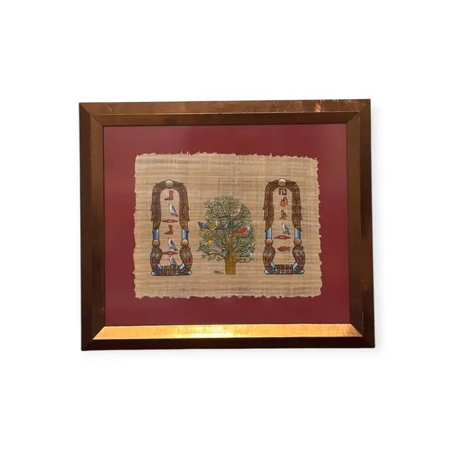
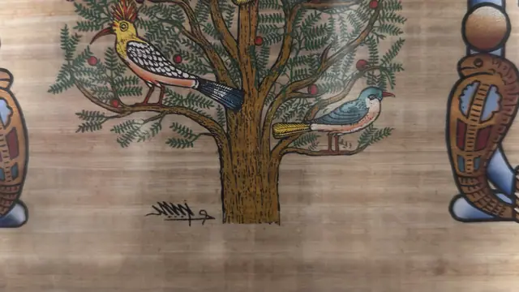
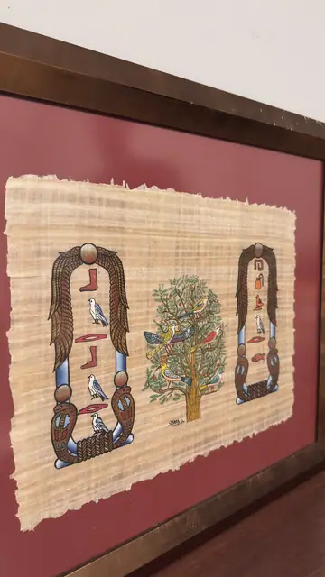
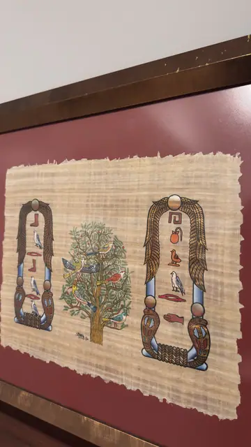

Paintings & Prints
Egyptian Papyrus, Cartouches and Fruiting Tree, Signed, Framed
· late 20th century
Price Upon Request




About the Item
A hand-painted papyrus with deliberately ragged deckle edges, laid on a deep brick-red backing. Two tall vertical cartouches with feathered wing motifs and blue-and-red banded columns stand at either side, each enclosing a stack of hieroglyphs including a falcon, a white ibis, a red vessel and a fish. Between them a spreading tree in olive and sage bears small red fruits, with a black-and-white crested hoopoe perched above and a blue bird below. The papyrus fibre grain runs visibly across the whole sheet, and the colour is opaque and flatly laid within crisp black outlines. Broad copper-gilt flat frame. Medium: gouache and ink on papyrus. Signed lower centre, on the papyrus beside the tree trunk. Condition: The papyrus is intact with its natural irregular edges and fibre voids; no tears, creases or losses seen. The red mount board is clean and the frame finish is even.
Details
- Creation Year:
- late 20th century
- Dimensions:
- Height: 22.0 in (55.88 cm)
Width: 25.7 in (65.28 cm)
outside of frame - Medium:
- gouache and ink on papyrus
- Period:
- 20Th
- Condition:
- Offered in the condition shown in the photographs.
- Reference Number:
- VO-179
- Documentation:
- no certificate photographed